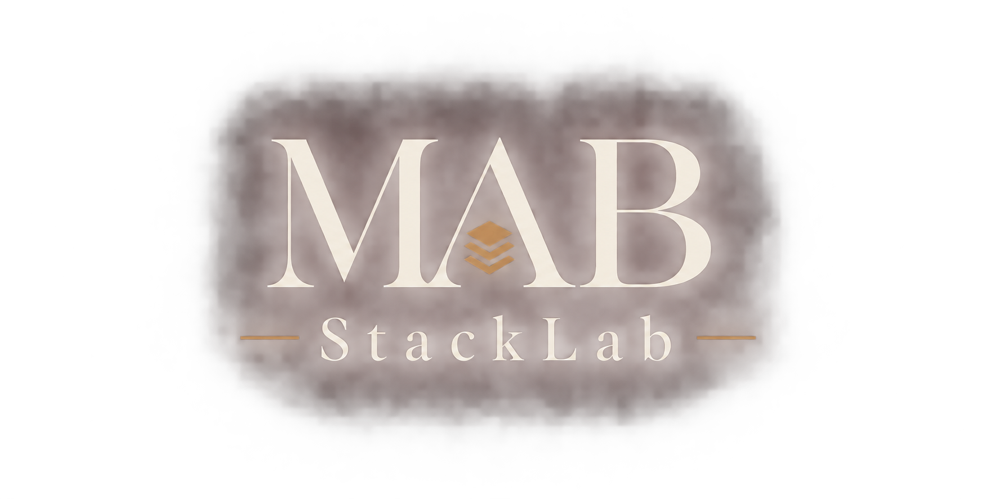
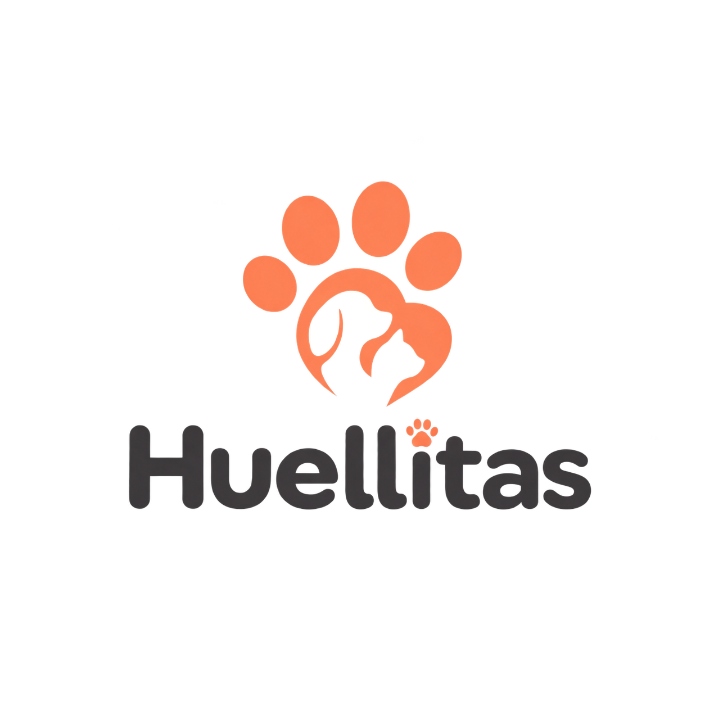

Desarrollo web
HTML · CSS · JavaScript · React
Creación de interfaces, componentes y páginas web adaptables.Me interesa crear soluciones digitales que sean útiles, organizadas y fáciles de utilizar. Disfruto aprender nuevas herramientas, desarrollar proyectos y convertir ideas en experiencias funcionales.
MAB StackLab

Creatividad · Tecnología · AprendizajeSOBRE MÍ
Soy estudiante de Tecnología en Desarrollo de Aplicaciones en la Fundación Universitaria Compensar. Me encuentro fortaleciendo mis conocimientos en desarrollo web, programación y análisis de información.
He desarrollado proyectos que me han permitido practicar la creación de interfaces, el manejo de datos, la organización de componentes y el diseño de soluciones centradas en las necesidades de los usuarios.
También he tenido acercamiento al área de análisis de datos y documentación de tableros en Power BI. Esta experiencia me ayudó a desarrollar habilidades de organización, atención al detalle, documentación y comunicación con otras personas del equipo.
CONOCIMIENTOS
Conocimientos que he desarrollado durante mi formación y experiencia práctica.
HTML · CSS · JavaScript · React
Creación de interfaces, componentes y páginas web adaptables.Power BI · Excel · SQL
Documentación de tableros, revisión de información y consultas básicas.Git · GitHub · Visual Studio Code
Organización de proyectos, control de versiones y trabajo con código.UML · Draw.io · Prototipado
Representación de procesos, diagramas y estructura de soluciones.Estas son algunas de las herramientas que he utilizado en proyectos y experiencias de aprendizaje.
PORTAFOLIO
Explora mis desarrollos, conoce las tecnologías que utilicé y prueba las experiencias disponibles.

PLATAFORMA WEB · EN DESARROLLO
Plataforma para amantes de las mascotas con catálogo, carrito de compras, registro, perfiles, adopciones y publicaciones de mascotas perdidas. Una experiencia que combina diseño y funcionalidad.
APLICACIÓN MÓVIL
Aplicación móvil para organizar información de mascotas y explorar funcionalidades relacionadas con su cuidado. Desarrollada con React Native y Expo para Android.
HERRAMIENTA WEB
Calcula el índice de masa corporal a partir del peso y la altura, muestra una clasificación orientativa y presenta recomendaciones generales de bienestar.
APLICACIÓN REACT
Aplicación que permite ingresar datos mediante un formulario, validar campos y visualizar registros en una lista, utilizando componentes y manejo de estado en React.
APLICACIÓN MÓVIL
Aplicación móvil con una experiencia de navegación organizada mediante pantallas apiladas, pestañas y menú lateral, inspirada en el universo de Rick and Morty.
Las demos de Huellitas e IMC son versiones de muestra. Huellitas usa almacenamiento local en el navegador; no introduzcas datos personales ni de pago reales.
EXPERIENCIA
He trabajado en actividades de análisis de datos y documentación de tableros en Power BI. Entre las actividades desarrolladas estuvieron la documentación de indicadores, revisión de información, apoyo en permisos de acceso y actualización de archivos relacionados con reportes.
Esta experiencia fortaleció mi capacidad para organizar información, seguir lineamientos, registrar procesos y trabajar con diferentes personas para resolver inquietudes.
Culminé el Técnico en Programación de Aplicaciones de Software, fortaleciendo mis conocimientos en programación y desarrollo de soluciones digitales.
FORMACIÓN
Fundación Universitaria Compensar
Formación complementaria
Certificación de fundamentos de Java
SENA
PROPUESTA DE VALOR
Considero que puedo aportar a una empresa compromiso, disposición para aprender y una combinación de conocimientos en desarrollo de aplicaciones y análisis de información.
Mis proyectos muestran mi interés por crear soluciones web, practicar nuevas tecnologías y mejorar la experiencia de los usuarios. Mi experiencia práctica en documentación y análisis también me ha enseñado a trabajar con orden, cuidar los detalles y comprender la importancia de la calidad de la información.
Estoy preparada para asumir nuevos retos, recibir retroalimentación y seguir fortaleciendo mis habilidades para contribuir al cumplimiento de los objetivos del equipo.
CONTACTO
Estoy interesada en seguir aprendiendo, participar en nuevos proyectos y aportar mis conocimientos a un equipo de trabajo.
DETALLES DEL PROYECTO